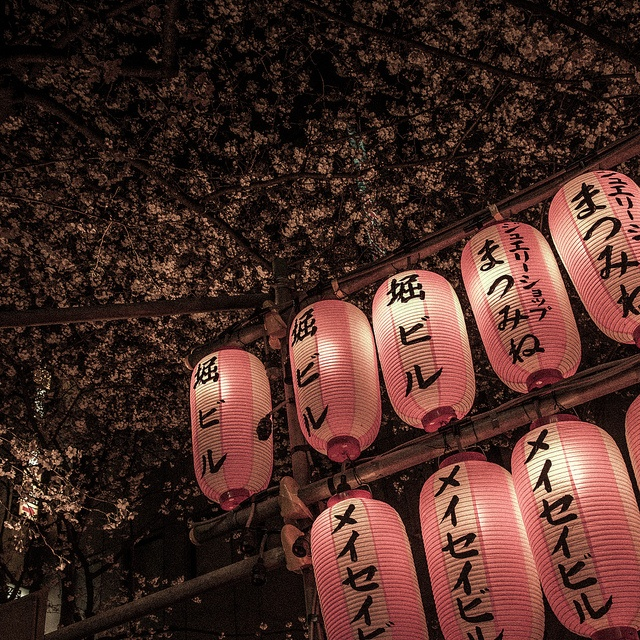

Festivals Japonais
Des matsuri traditionnels aux fêtes modernes : lanternes, tambours, mikoshi et stands de rue. Prépare ton planning et profite sans stress.
Qu’est‑ce qu’un matsuri ?
À l’origine, un matsuri est une fête liée à un sanctuaire shinto pour honorer une divinité locale (kami). Aujourd’hui, c’est aussi un moment de cohésion, de musique et de cuisine de rue.
Grands rendez‑vous
- Gion Matsuri (Kyoto, juillet) — Défilés de chars yamaboko.
- Nebuta (Aomori, début août) — Chars lumineux géants.
- Awa Odori (Tokushima, mi‑août) — Danses bon odori.
- Kanda Matsuri (Tokyo, mai) — Processions et bénédictions.
Se préparer
Arrive tôt, repère les rues fermées, prévois eau/chapeau en été et un peu d’espèces pour les yatai (takoyaki, yakitori, kakigori). Respecte les zones autour des sanctuaires.
Astuce : en plein été, pense brumisateur + mini serviette. Les foules sont denses :
fixe un point de rendez‑vous si vous êtes plusieurs.